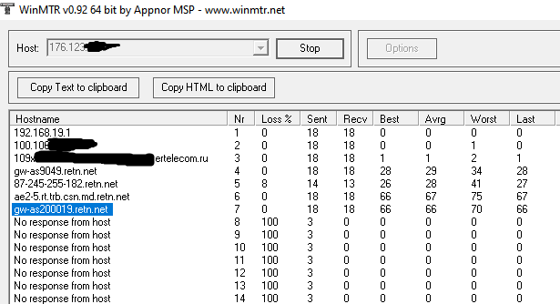

Ориентировочно с ночи до 09:42 МСК 10 апреля наблюдались блокировки у провайдера Дом.ру.
VPS в Европе с которым было стабильное соединение на протяжении месяцев оказался недоступен вместе со своей подсетью, сайт и панель хостера при этом были доступны.
Также оказались недоступны как минимум 185.15.59.224 (wikipedia.org) и 128.199.37.63 (poiskvps.ru).
Упомянутые адреса были заблокированы целиком, все попытки подключения обрывались по таймауту. Пинга также не было.
В то же время эти ресурсы были доступны с мобильного интернета и по данным различных сервисов проверки доступности внутри РФ.
По сообщениям пользователей в группе Дом.ру блокировка затронула и другие сервисы (Тот самый момент, когда в голову пришла гениальная.. | Дом.ру | VK).
В 09:42 МСК проблема пропала без следа.
2024-04-10T20:28:43.029Z
gcjx4iwxs
Сталкнулся с тем же самым
2024-04-10T20:34:05.928Z
0ka(0ka)
10 числа примерно с 12:00 до 12:20 были проблемы с инетом от рт сз: трассировка не шла дальше второго хопа (на укр.ip такая же), входящие подключения не шли, установленные исходящие оборвались, pppoe не обрывался. под конец постепенно трассировка начала проходить, на одной pppoe сессии уже все работало, на другой через минуту пошла трасса на 1.1.1.1, еще через минуту уже на все остальные ip адреса.
Скорее всего где-то в рт косяк был, а не тесты ркн, т.к. даже днс от рт был недоступен
2024-04-11T08:22:26.147Z
anon57137390
Блокировки VPN протоколов тоже начинались как косяки. Сначала длилось часами, потом днями, затем неделями. Сейчас на постоянку у большинства мобильных и части проводных операторов. Вне зависимости от причин, исправление закончилось белым списком российских адресов. Новые косяки, после обращений обеспокоенной общественности, исправят белыми списками протоколов для не российских адресов. В финале, вероятно, будут белые списки доменов для всех адресов и реестром где будут регистрировать свои днявки с депонированием ключей кузнечика (других не будет). И это ближайшая перспектива.
2024-04-11T10:22:07.619Z
dorisavaried
Ситуация повторилась 25 мая в период примерно с 12 до 13 часов МСК.
В отличие от прошлого раза 185.15.59.224 (wikipedia.org) был доступен.
Следующие ресурсы были недоступны 128.199.37.63 (poiskvps.ru), 64.226.122.113 (openwrt.org), 199.232.198.114 (techradar.com), 64.91.240.248 (9tomac.com).
Трассировка недоступных ресурсов обрывалась на “87-245-243-61.retn.net [87.245.243.61]”, хотя при нормальной работе дальнейшие промежуточные узлы также имеют вид “*.retn.net”.
У меня недостаточно знаний чтобы судить имеет ли данная ситуация отношение непосредственно к блокировкам, либо является сбоем.
Провайдер на работе Дом.ру
Пинги и другие протоколы умерли по пути к alexhost, это эр-телеком или кто-то после них режет?
Почему-то умирает на gw-as200019.retn.net
